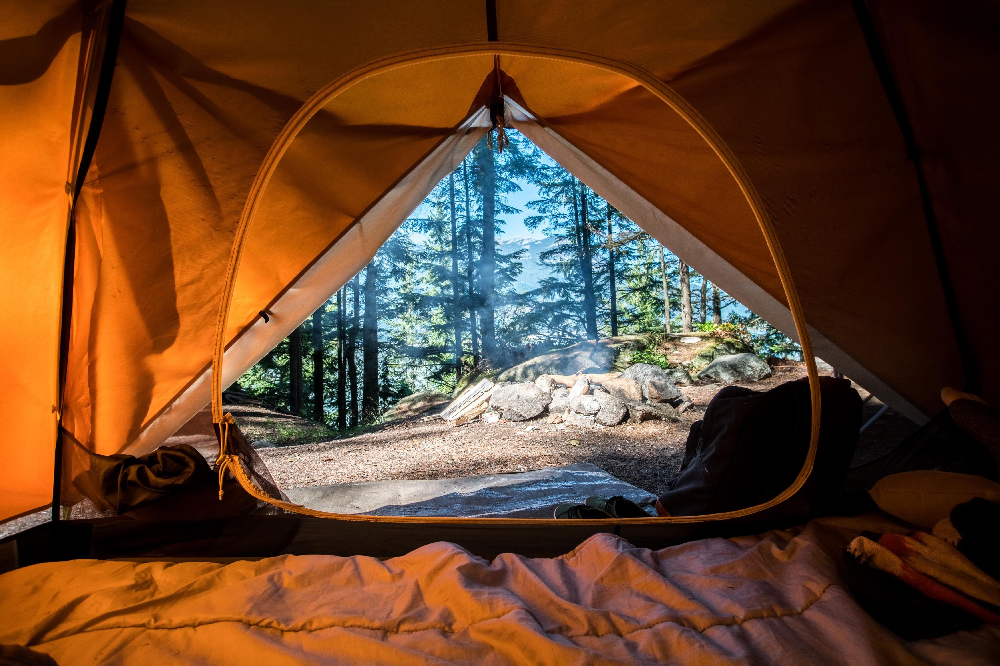
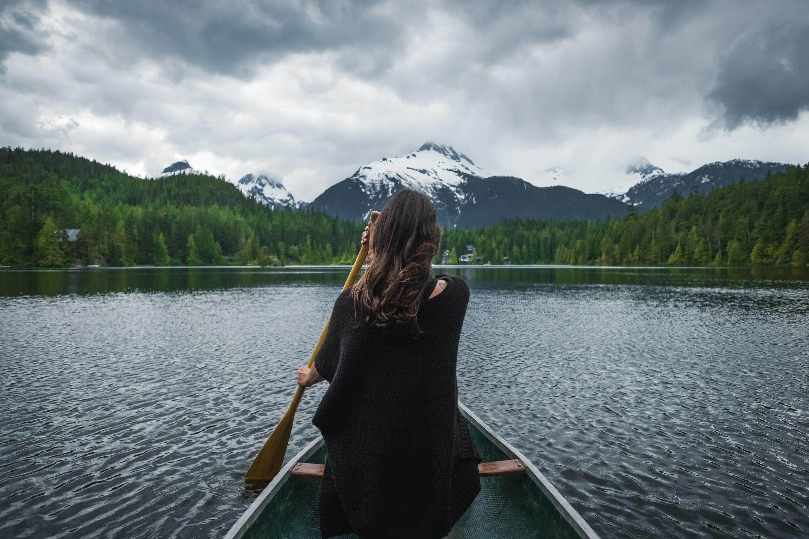
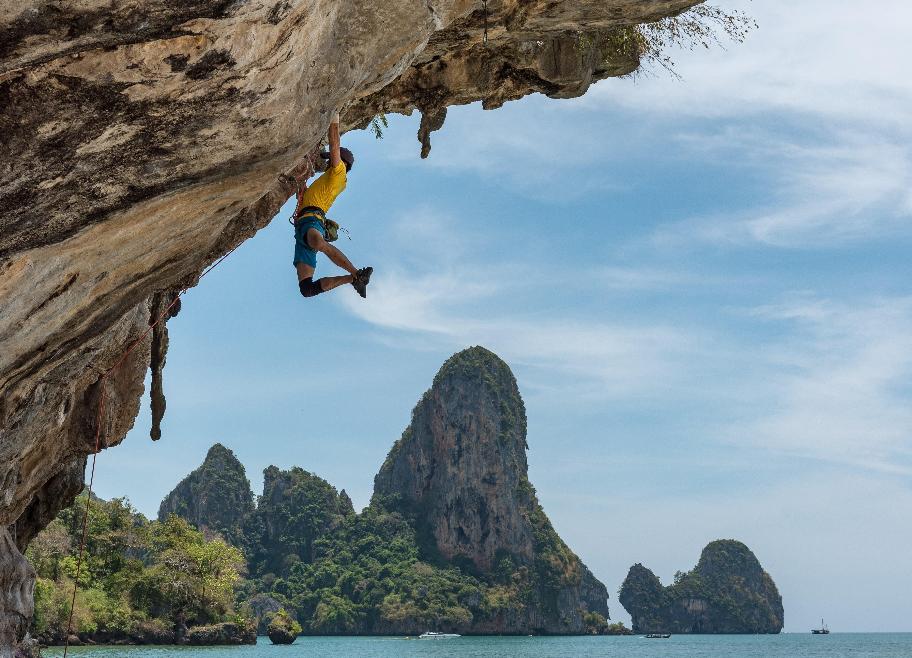

Camping
Being outdoors, one with mother nature is truly something you have to aclompish at least once in your life!
Read more EnquireCanoeing
To get a new perspective on the beauty of Cape Town, embark on a kayaking sea trip!
Read more EnquireRock Climbing
The Cape region of South Africa boasts some of the best rock climbing, highly regarded among international climbers.
Read more Enquire